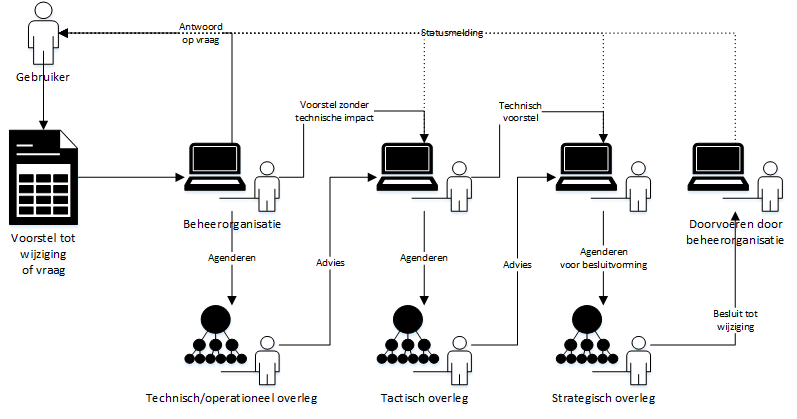

Dit is een werkversie die op elk moment kan worden gewijzigd, verwijderd of vervangen door andere documenten. Het is geen door het TO goedgekeurde consultatieversie.
Conformiteit
Naast onderdelen die als niet normatief gemarkeerd zijn, zijn ook alle diagrammen, voorbeelden, en noten in dit document niet normatief. Verder is alles in dit document normatief.
Samenvatting
Dit document beschrijft het beheermodel voor de
Digikoppeling-standaarden. Het geeft alle belanghebbenden
inzicht in het releasebeleid, in de wijze waarop het beheer
van Digikoppeling is belegd, hoe het proces van wijzigen en
releaseplanning van de Digikoppeling standaard eruit ziet
en hoe de besluitvorming en participatie is georganiseerd.
Daarnaast komen aanvullende onderwerpen aan de orde zoals
release-nummering en de publicatie en informatievoorziening
rond Digikoppeling.
Documentbeheer
Datum
Versie
Auteur
Opmerkingen
20-03-2009
0.1
Logius
Input voor werkgroep
07-04-2009
0.2
Logius
Commentaar TO OSB verwerkt
08-04-2011
0.3
Logius
Update Digikoppeling
30-08-2011
1.0
Logius
Update Stelsel governance
09/11/2012
1.1
Logius
Bomos2I, licentie en klachtenproces
03/06/2014
1.2
Logius
Nieuw sjabloon + bijwerken
02/02/2015
1.3
Logius
Aanpassingen Governance Digikoppeling nav beëindiging i-NUP programma eind 2014
04/04/2016
1.4
Logius
Digikoppeling Beveiligingsstandaarden en voorschriften is toegevoegd als nieuw document en onderdeel van de standaard, figuren op p8 en p11 zijn aangepast.
01/10/2017
1.5
Logius
Figuur overzicht documentatie aangepast
15/05/2019
1.6
Logius
Governancestructuur aangepast
xx/xx/2022
1.7
Logius
Governancestructuur volgens GDI governance, wijzigingsprocess beschreven. BOMOS versie 3 template als basis gebruikt. Document volledig herzien.
Het beheer van de Digikoppeling-standaard omvat het geheel van
processen, besturing, organisatie, informatievoorziening en
hulpmiddelen die noodzakelijk zijn om gebaseerd op open standaarden
Digikoppeling als open standaard in stand te houden, te
onderhouden en door te ontwikkelen. Het beheer van Digikoppeling is
gebaseerd op de principes uit de BOMOS standaard.
1.1 Leeswijzer
De Digikoppeling standaarden zijn beschreven in een set van documenten.
Deze set is als volgt opgebouwd:
De standaarddocumenten (groen/vierkant aangegeven) vallen onder het beheer zoals geformaliseerd in het document Digikoppeling Beheermodel.
De ondersteunende documentatie wordt onderhouden door Logius als de beheerder van de standaard (en afgestemd met stakeholders/ gebruikers).
Alle goedgekeurde documenten zijn te vinden op de website van Logius, www.logius.nl.
De Digikoppeling Koppelvlakstandaarden bevatten meerdere profielen
waarin een samenhangend interactiepatroon voor berichtuitwisseling is
beschreven2.
2: Een Digikoppeling service (Service Provider en Service
Requester) werkt altijd volgens een vooraf bepaald profiel voor
berichtenuitwisseling volgens een Koppelvlakstandaard.
"Gebruik en achtergrond Digikoppeling-certificaten" en de Best
Practice documenten zullen blijvend beheerd worden, maar volgens
afwijkende procedures. Deze documenten vereisen niet dezelfde strikte
besluitvorming aangezien zij een toelichting vormen bij de
Koppelvlakstandaarden en architectuur.
Het beheer heeft ook betrekking op de bij de Digikoppeling-familie
behorende documenten, bestanden en voorzieningen, zoals nieuws en
persberichten, factsheets, presentaties, opleidingsmateriaal,
relatiegegevens van Digikoppeling participanten. Het beheer hiervan
vraagt echter ook een minder formele besluitvormingsprocedure.
Bij de Digikoppeling horen de volgende ondersteunende hulpmiddelen en
ICT voorzieningen:
Digikoppeling OIN Register en het hieraan gekoppelde CPA-register,
Digikoppeling Compliance Voorzieningen (WUS, ebMS2, grote berichten),
Het beheer over deze voorzieningen is in bestaande beheerprocedures
van Logius ondergebracht.
1.1.1 Bijlagen
Practische aspecten van het beheer, zoals de gebruikte applicaties
en webservices zijn opgenomen in bijlagen van dit document.
De bijlagen zijn niet specifiek voor Digikoppeling maar zijn relevant
voor alle standaarden onder beheer bij Logius.
1.2 Digikoppeling
Digikoppeling vormt de logistieke laag voor standaardisatie van
communicatie tussen systemen bij overheidsorganisatie op basis van
webservice standaarden. Digikoppeling is daardoor een laag die zich
bevindt tussen het transportnetwerk (b.v. Diginetwerk of Internet)
en de applicatielaag (functionele berichtinhoud). De systemen die
Digikoppeling gebruiken zijn zowel systemen toegepast worden voor
interactie van burgers met overheden als voor systemen die berichtenverkeer
tussen overheden afhandelen. Be berichtenverkeer gaat het hierbij vooral
om berichten rondom de basisregistraties.
De Digikoppeling-standaard is binnen de overheid in gebruik bij
diverse organisaties, samenwerkingsverbanden en/of ketens.
Een groot aantal ICT leveranciers biedt ondersteuning aan de voor
Digikoppeling benodigde open standaarden (WUS, ebMS, HTTPS)
in hun producten en dienstverlening. De Digikoppeling standaard
heeft de zich afgelopen tijd ontwikkeld tot een volwassen standaard
die in een grote en brede community wordt ontwikkeld. Bij het
beheer van de Digikoppeling-standaard zijn veel verschillende
organisaties betrokken uit de gehele Digitale Overheid.
De voornaamste organisaties zijn ministeries, Manifestpartijen,
houders van basisregistraties en landelijke voorzieningen,
ketenpartijen, ICT leveranciers en gemeenten via de VNG.
Opdrachtgever voor Digikoppeling is het Ministerie van BZK.
1.2.1 Nut
Doel van Digikoppeling is om door vergaande standaardisatie de
interoperabiliteit tussen overheden te bevorderen.
Als de 'envelop' van de 'berichten' is gestandaardiseerd kan
ieder voorzieningen voor postverzending inrichten die
onafhankelijk zijn van de berichten in de 'envelop'.
De systemen die Digikoppeling gebruiken zijn zowel
frontoffice-systemen (die interactie met burgers en bedrijven
afhandelen) als systemen van andere overheden en in het
bijzonder de basisregistraties (zie onderstaand figuur).
1.2.2 Werking
De Digikoppeling Koppelvlakstandaarden bevatten meerdere profielen
waarin een samenhangend interactiepatroon voor berichtuitwisseling is
beschreven2.
2: Een Digikoppeling service (Service Provider en Service
Requester) werkt altijd volgens een vooraf bepaald profiel voor
berichtenuitwisseling volgens een Koppelvlakstandaard.
1.2.3 Status
Digikoppeling is opgenomen op de pas toe of leg uit lijst van het Forum
Standaardisatie.
1.3 BOMOS
Het activiteitendiagram toont welke lagen het model onderscheidt en welke activiteiten daarbinnen onderscheiden worden. De lagen en de ondersteunende
activiteiten worden elk in een hoofdstuk besproken.
De strategische activiteiten van BOMOS bestaan uit de onderdelen
Visie, Govenance en Financiering. Deze onderdelen en hun toepassing op
het beheer van Digikoppeling worden hieronder beschreven.
2.1 Visie
Met de Digikoppeling standaard wil de Nederlandse overheid
interoperabiliteit
bevorderen. Dit komt erop neer dat overheden dezelfde standaard in
vergelijkbare situaties toepassen. Dit maakt uiteindelijk dat
componenten en systemen onderling effectief gegevens uit kunnen
wisselen. Zowel horizontaal in één voorziening binnen één situatie als
verticaal tussen voorzieningen in verschillende situaties en tussen
organisaties. Deze doelstelling wordt onderschreven door een breed
scala aan partijen die deelnemen aan het xxx Kennisplatform, waar de
ontwikkeling van de standaard zijn oorsprong heeft, en is bestendigd
door Forum Standaardisatie en het OverheidsBrede Beleidsoverhed
Digitale Overheid (OBDO), die de Digikoppeling standaard hebben
opgenomen op de zogenaamde ‘pas toe of leg uit’-lijst met andere
standaarden die interoperabiliteit bevorderen
zie ook de basisinformatie van het Forum Standaardisatie.
2.2 Governance
Bij het beheer van een open standaard hoort een open governance en een
open procedure voor belanghebbenden om te kunnen participeren in het
beheer. Logius neemt hierin de rol van onafhankelijke, duurzame
beheerpartij en facilitator. Logius gaat uit van de governance van de
Generieke Digitale Infrastructuur (GDI). De GDI geeft richting aan het Meerjarenprogramma Infrastructuur Digitale Overheid (MIDO). Voor MIDO
is een governance opgesteld waarin de stakeholders van Logius richting
geven aan de ontwikkelingen bij Logius. Standaardenbeheer sluit aan op
deze governance.
De MIDO governance kent vier programmeringstafels op de thema's Gegevensuitwisseling, Infrastructuur, Interactie en Toegang. Op de tafels wordt de ontwikkeling en prioritering van de door Logius beheerde stelsels, standaarden en diensten besproken met de stakeholders.
2.2.1 Governancestructuur
Digikoppeling sluit aan op de MIDO governance op tactisch en strategisch
niveau. Voor de governance van Digikoppeling zelf zijn meer governance
lagen nodig, met name voor operationeel niveau. Digikoppeling beheer omvat
de volgende gremia:
2.2.1.1 De Digikoppeling community
Dit is het meest operationele gremium waarin iedere
belangstellende/belanghebbende vragen kan stellen over de
Digikoppeling standaard en suggesties kan doen voor de
doorontwikkeling van de standaard.
Het beheer van de Digikoppeling standaard is open. Dat wil zeggen dat
alle documentatie van de standaard en de wijzigingen open beschikbaar is.
Wijzigingsvoorstellen kunnen door iedereen ingediend worden.
Voor contact met de Community maakt Logius gebruik van de Logius website en van Github.
Omdat iedere belangstellende vragen of voorstellen tot wijziging in
kan dienen is het niet nodig lid te worden van de community om een
bijdrage te leveren. Iedereen die bijdraagt aan de standaard is
daarmee lid van de community.
2.2.1.2 Technisch Overleg
Het Technisch Overleg (TO) is een periodieke bijeenkomst waarbij de
vragen en doorontwikkelwensen m.b.t. Digikoppeling worden doorgenomen,
geprioriteerd en worden uitgewerkt. Daarnaast wordt door de leden de
releaseplanning en de roadmap opgesteld. Deelname aan het Technisch Overleg
is vrij voor eenieder die een belang heeft bij de standaard
(overheid, wetenschap en markt).
Dit overleg is verantwoordelijk voor het goedkeuren van de
roadmap voor doorontwikkeling van de standaard, het goedkeuren
van major/minor releases van de standaard en dient als het
voorportaal van het strategische overleg en het besluitvormende overleg.
2.2.1.4 Het Strategisch overleg: De Programmeringsraad GDI
In de MIDO structuur heeft de Programmeringsraad GDI (PGDI) een rol in
het strategisch beheer van standaarden. De programmeringsraad is gemandateerd
(door het OBDO)
om besluiten te nemen over wijzigingen op de standaard.
Het strategisch overleg keurt voorstellen tot wijziging goed op basis van
adviezen van het technisch overleg, het tactisch overleg en het advies van de
beheerorganisatie. Daarnaast keurt het strategisch overleg de door de
stakeholders voorgestelde richting goed die aan de beheerorganisatie voorgelegd
wordt. Bijvoorbeeld een voorstel tot ingrijpende wijziging zoals het overgaan
naar een nieuwe (onderliggende) standaard kan in het strategisch overleg
goedgekeurd worden.
De beheerorganisatie werkt goedgekeurde voorstellen uit en neemt deze op in
een vast te stellen nieuwe versie.
Het Overheidsbreed Beleidsoverleg Digitale Overheid (OBDO) is het overkoepelend
overleg voor de MIDO overleggen. Formeel vindt besluitvorming plaats op het
niveau van het OBDO. Voor GDI standaarden mandateert het OBDO de
programmeringsraad tot het nemen van besluiten over wijzigingen op de standaard.
Het OBDO wordt geïnformeerd over wijzigingen op de standaard.
In tabelvorm:
Gremium
Accent
Rol participant
Ondersteuning door beheerder (Logius)
Community (omvang beperkt)
Inhoud -- delen
1. Volgen van ontwikkelingen. 2. Leveren van input voor de doorontwikkeling van de standaard.
1. Informatie m.b.t. specificaties en beheer open delen met community. 2. Deelnemen aan stuurgroep en werkgroepen
Technisch Overleg (Operationeel, 4x per jaar)
Inhoud - afstemmen
1. Inhoudelijk ontwikkelen van standaard onderdelen en bijbehorende documentatie. 2. Voorbereiden van de release- planning. 3. Prioriteiten stellen voor de ontwikkeling, roadmap van nieuwe releases van de standaarden. 4. Goedkeuring van aanpassingen op de standaard. 5. Advies aan programmeringstafel en -raad over wijzigingsvoorstellen.
1. Analyseren, ontwerpen en uitwerken van specificaties. 2. Volgen en beïnvloeden van aanpalende standaarden. 3. Organiseren bijeenkomsten. 4. Opstellen en verspreiden notulen. 5. Beschikbaar stellen specificaties.
Programmeringstafel
Adviserend
1. Goedkeuren roadmap van de standaard. 2. Goedkeuren major/minor releases van de standaard.
1. Analyseren, ontwerpen en uitwerken van beleidszaken, (release)planning.
Programmeringsraad
Besluitvormend
1. Goedkeuren van grote wijzigingen: Introductie nieuwe koppelvlak standaarden en uitfasering bestaande koppelvlak standaarden. 2. Goedkeuren beheermodel van de standaard. 3. Goedkeuren externe publicaties over het standaardenbeleid en releases. 4. Goedkeuren major/minor releases van de standaard.
1. Advisering en inbreng via secretariaat MIDO. 2. Publiceren standaarden en andere Standaard-informatie
OBDO
Besluitvormend
Het OBDO wordt geïnformeerd over wijzigingen op de standaard.
Toelichten wijzigingen in een release
2.2.1.6 Architectuurraad
De Architectuurraad GDI van de MIDO governance maakt geen deel uit van het
Digikoppeling beheerproces. Wel kan de beheerder advies vragen over een
wijzigingsvoorstel. Dit kan gevraagd worden op eigen initiatief of op
initiatief van het Technisch Overleg.
2.2.2 Besluitvorming
Besluitvorming over wijzigingsvoorstellen kan plaatsvinden op verschillende
niveaus.
In alle overleggremia vindt oordeelorming plaats op basis van
consensus. Mocht consensus niet mogelijk zijn, dan gaat het vraagstuk
met een weergave van de verschillende standpunten door naar het
eerstvolgend-hoger gelegen-gremium. Indien in het hoogste gremium
(het OBDO) geen consensus bereikt kan worden heeft de voorzitter
van het OBDO (ministerie van BZK) de beslissende stem.
Voor wijzigingen met zeer kleine impact (tekst correcties) wordt de
beheerorganisatie gemandateerd. De beheerorganisatie mag deze wijzigingen
zelf doorvoeren zonder formele beslissing door het besluitvormend overleg.
In de versienummering worden
deze zeer kleine wijzigingen aangeduid als patch releases. Voor andere
wijzigingen is een besluit van het PGDI nodig (op basis van advies van
de Programmeringstafel en de beheerorganisatie). Het OBDO wordt geïnformeerd
over wijzigingen op de standaard.
2.2.3 Deelname
Uitbreidingen en aanpassingen in de Digikoppeling standaard komen tot stand door
participatie van de verschillende belanghebbenden. Belanghebbenden
kunnen op vijf manieren participeren aan het wijzigings- en
besluitvormingsproces:
Als lid van de Community. Omdat Digikoppeling open beheerd wordt
is geen formeel lidmaatschap nodig om een issue/wijziging in te dienen.
Iedereen die een issue indient is daarmee lid van de community.
Als lid van de Technisch Overleg
Leden van het technisch overleg dienen een aantoonbaar belang
te hebben bij de standaard.
De omvang en samenstelling moet een goede vertegenwoordiging
bevatten van de verschillende belangen rond de standaard.
We gaan uit van 1 deelnemer per organisatie.
Het belang van de Nederlandse overheid dient voldoende geborgd
te zijn in het technisch overleg.
Als lid van de Programmeringstafel Gegevensuitwisseling
Stakeholders van de Logius Gegevensuitwisselingsdiensten worden
uitgenodigd.
Als lid van de Programmeringsraad GDI.
Als lid van het OBDO.
Personen/partijen die willen deelnemen aan het Technisch Overleg
kunnen contact opnemen met Logius waarin zij aangeven wat hun belang is
bij de standaard. Met inachtneming van bovenstaande punten, beoordeelt
Logius de aanvraag.
2.3 Financiering
Het beheer van de Digikoppeling standaard wordt gefinancierd door het
ministerie van BZK in het kader van de financiering van Logius
dienstverlening.
3. Tactiek
Tactische aspecten van het beheer van de Digikoppeling standaard omvatten
de open invulling, samenhang met andere standaarden, het stimuleren
van het gebruik van de standaard en tot slot het kwaliteitsbeleid.
3.1 Community
Veel verschillende partijen hebben direct dan wel indirect belang bij
de ontwikkeling, de implementatie en het gebruik van de
Digikoppeling-standaard. Dit geldt dus ook voor het beheer en
onderhoud ervan. In onderstaand schema zijn de belanghebbenden
aangegeven.
De Digikoppeling standaard wordt in stand gehouden en doorontwikkeld
door participatie van de belanghebbenden. Ruwweg zijn drie rollen te
onderkennen, de vraagkant, de aanbodkant en de ondersteuningskant:
De vraagkant bestaat uit organisaties die Digikoppeling koppelingen
gebruiken voor de eigen informatievoorziening, sectoren die
Digikoppeling gebruiken als standaard voor
(keten)integratiedoeleinden en e-overheidsprojecten die
Digikoppeling toepassen.
De aanbodkant bestaat uit ICT leveranciers die de producten maken
voor ondersteuning van de open standaarden waarop Digikoppeling is
gebaseerd (adapter-leveranciers of diensten-leveranciers). Onder de
aanbodkant rekenen we ook standaardisatie-organisaties (OASIS, W3C
e.d.) waar de standaarden waarop Digikoppeling is gebaseerd vandaan
komen.
De ondersteuningskant bestaat uit de beheerders van de
Digikoppeling-standaarden en beheerders van de
Digikoppeling-voorzieningen. Expertise voor Digikoppeling is ook
verkrijgbaar in de markt.
Afhankelijk van eigen doelstellingen, verantwoordelijkheden en
belangen zullen belanghebbenden op een andere wijze participeren.
3.2 Architectuur
De Nederlandse Overheid Referentie Architectuur (NORA) positioneert
Digikoppeling als de logistieke laag voor standaardisatie van
communicatie tussen systemen bij overheidsorganisatie op basis van
webservice standaarden.
De NORA maakt geen deel uit van het in dit document beschreven
beheer van de Digikoppeling-standaard, maar bevat wel belangrijke
informatie over Digikoppeling en haar toepassing.
De MIDO governance kent een Architectuurraad.
Dit gremium kan om advies worden gevraagd over wijzigingsvoorstellen.
3.2.1 Internationale, Europese en nationale standaardisatiegemeenschap
Internationale standaarden leveren de basis voor de koppelvlakspecificaties
die we in Digikoppeling gebruiken.
Digikoppeling volgt de ontwikkeling van internationale standaarden,
beheerd door organisaties als W3C en OASIS. Deze organisaties
beheren basisstandaarden als WUS, ebMS [EBXML-MSG] en HTTP [rfc1945].
In EU kader wordt de
eDelivery
standaard beheerd. eDelivery is in functionaliteit vergelijkbaar met
Digikoppeling. eDelivery is net als Digikoppeling gebaseerd op ebMS. Hoewel
eDelivery gebaseerd is op de nieuwere ebMS3/AS4 standaard.
Noot: Het 4 corner model
3.2.2 Samenwerking met andere beheerorganisaties
Digikoppeling sluit aan op onderstaande standaarden. De aansluiting
vindt plaats binnen de vastgestelde releasetermijnen van de
Digikoppeling onderdelen.
Basisstandaarden als WUS, ebMS en HTTP. Deze worden beheerd door
standaardisatieorganisaties als OASIS en W3C (zie boven).
Koppelvlakstandaarden worden waar mogelijk geharmoniseerd met internationale
(EU) standaarden. Hiervoor volgen we onder meer de standaarden en bouwstenen
van EU DIGIT.
De Digikoppeling-standaard volgt de Nederlandse Overheid Referentie
Architectuur (NORA).
De Digikoppeling-standaard en in het bijzonder "Gebruik en
achtergrond Digikoppeling-certificaten" sluiten aan bij de
PKI.Overheid.
Logius deelt ervaringen met het beheer van standaarden zoals Digikoppeling
met andere standaardenorganisaties binnen het BOMOS Klankbordoverleg.
3.3 Rechtenbeleid
Dit werk is gelicenseerd onder een Creative Commons Naamsvermelding 4.0
Unported licentie.
Figuur 5Creative Commons Naamsvermelding 4.0 Unported licentie
Dit werk en de specificaties van de Digikoppeling-standaard worden
royalty free ter beschikking gesteld. Organisaties en personen die
bijdragen aan Digikoppeling dienen hun bijdragen vrij te geven zodanig
dat hieraan voldaan kan worden. Door bij te dragen aan Digikoppeling
verklaren zij hiermee in te stemmen.
Uitgesloten van alle bovenstaande zijn rechten verbonden aan de
standaarden, profielen en andere onderdelen waar Digikoppeling gebruik
van maakt. Hierop zijn de rechten van de betreffende standaarden,
profielen en andere onderdelen zelf van toepassing.
3.4 Kwaliteitsbeleid en benchmarking
Zoals gezegd wordt het beheer van de Digikoppeling standaard volledig
open ingevuld (zie ook de paragraaf BOMOS en
Governance) Dit borgt dat zoveel
mogelijk belangstellenden en belanghebbenden betrokken zijn bij
wijzigingen en besluitvorming rond die wijzigingen.
3.5 Adoptie en erkenning
De Digikoppeling standaard heeft de 'pas toe of leg uit' -status van Forum
Standaardisatie. Dit betekent kort gezegd dat Nederlandse
overheidspartijen en partijen uit de (semi) publieke sector deze
standaard dienen toe te passen op het moment dat zij hun informatie
met behulp van Digikoppeling standaard willen ontsluiten voor andere overheidspartijen.
Zie sectie over visie in de strategie voor meer informatie.
4. Operationeel
Operationeel beheer omvat volgens BOMOS het tekstuele beheer van de
documentatie, het verzamelen van eisen en wensen en de vertaling daarvan
naar wijzigingsvoorstellen. Verder omvat het operationele proces de
besluitvorming en het versie- of release-beheer
Het operationele wijzigingsproces is ingericht op Github. De omgeving
die we ook gebruiken voor het beheer en de publicatie van de documentatie.
In dit hoofdstuk wordt het operationele wijzigingsproces op hoofdlijnen
beschreven. Voor details van de implementatie verwijzen we naar de
bijlage over gebruik Github in het beheerproces
4.1 Initiatie
Toevoegingen aan de standaard zoals het toevoegen van een nieuwe
koppelvlakspecificatie worden behandeld als in introductie van een nieuwe
standaard. Een voorbeeld is de toevoeging van de REST API koppelvlakspecificatie
aan Digikoppeling.
Uitbreidingen en aanpassingen in de Digikoppeling standaarden komen tot
stand door participatie van de verschillende belanghebbenden.
Belanghebbenden kunnen op verschillende manieren participeren.
op persoonlijke titel (het proces is volledig open)
als lid van de Digikoppeling Community
als lid van één van de Digikoppeling overleggen: het Technisch Overleg,
de Programmeringstafel Gegevensuitwisseling of het OBDO.
4.2 Wensen en Eisen
Wensen en eisen zijn aanpassingen op de bestaande standaarden en
koppelvlakspecificaties.
Wijzigingsvoorstellen kunnen binnen komen via verschillende kanalen:
Rechtstreeks bij de beheerorganisatie, tijdens overleggen, via de website
of mail
Bij de werkgroepoverleggen van de standaard en tijdens overleggen, via de
website of mail
4.3 Uitvoering en ontwikkeling (Wijzigingsproces)
Afhankelijk van de impact van een wijziging kan deze aangemerkt worden als
een patch. Een patch is een kleine (tekstuele) wijziging die geen impact
heeft op implementaties.
Een wijziging is een aanpassing met impact op de werking of het proces van
de Digikoppeling standaard. Waarbij nog een onderscheid gemaakt wordt tussen
wijzigingen met kleine en met grote impact.
Patches en wijzigingen worden verzameld in een release. Een release is een
nieuwe versie van de Digikoppeling standaard. Nieuwe releases worden regelmatig
doorgevoerd en moeten worden goedgekeurd door het Technisch Overleg en,
afhankelijk van de impact van een nieuwe release door een programmeringstafel.
Een nieuwe release wordt bekrachtigd door het besluitvormend overleg.
4.3.1 Wijzigingen

Figuur 6Behandeling van een wijzigingsvoorstel in het beheerproces
Acceptatie van een wijzigingsvoorstel.
Labelen van een voorstel als groot/klein, aangeven van status.
Behandeling van een wijzigingsvoorstel.
Agendering voor een overleg.
Advisering vanuit overleggen.
Acceptatie van een wijzigingsvoorstel.
Doorvoeren van een wijzigingsvoorstel.
Publicatie van een wijziging in de komende release
Wanneer een wijziging is geaccepteerd kan deze deel uitmaken van een
volgende release.
4.3.2 Patches
Een patch is een zeer kleine wijziging die geen impact heeft op de implementatie. Bijvoorbeeld tekstuele wijzigingen in de documentatie. De beheerorganisatie beoordeelt de impact van een wijziging en bepaalt daarmee of het een patch betreft (of een wijziging).
Beoordeling van een voorgestelde patch door de beheerorganisatie
Doorvoeren van de patch door de beheerorganisatie
Publicatie van een patch in de komende release
4.3.3 Releases
De onderdelen van de Digikoppeling standaard en Digikoppeling voorzieningen zullen gezamenlijk en afzonderlijk onderhevig zijn aan beheer en onderhoud wat leidt tot nieuwe releases. Het vaststellen van nieuwe releases vindt plaats binnen het releaseplanningsproces. Het tactisch overleg is verantwoordelijk voor de juiste uitvoering. Hier komen alle belanghebbenden met verantwoordelijkheid voor de behoefte, effecten en impact op de bedrijfsvoering, informatievoorziening en ICT samen.
Het vaststellen van een nieuwe release van afzonderlijke Digikoppeling onderdelen en een samenhangende Digikoppeling architectuur wordt gedaan volgens het beleid in paragraaf 2.4. Digikoppeling beheer zal binnen de releaseplanning niet alleen nieuwe releases voordragen aan het tactisch/strategisch overleg maar ook voorstellen hoe lang oude releases in bedrijf blijven en ondersteund zullen worden.
Voor nieuwe releases wordt uitgegaan van een aantal principes:
De Digikoppeling-standaard dient in principe zo stabiel te zijn dat
nieuwe releases van de standaard bestaande implementaties van een
oudere release niet tot migratie verplichten.
Nieuwe releases van de standaard dienen als nieuwe profielen binnen
een Koppelvlakstandaard naast de bestaande profielen gerealiseerd
te worden (uitbreiding). Indien dit niet mogelijk is wordt gestreefd
naar het interoperabel (engels: backwards compatible) zijn van
profielen met voorgaande releases (interoperabele verandering).
Bij wijzigingen waarin ook dit niet mogelijk is, vindt een expliciete
afweging plaats van de geboden verbetering ten opzichte van het belang
van bestaande implementatie (beperking impact).
Wijzigingsaanvragen kunnen door belanghebbenden worden ingediend
bij de beheerder.
Het Digikoppeling Technisch Overleg is verantwoordelijk voor de
beoordeling van ingediende wijzigingsaanvragen, uitwerken ervan
en de inhoudelijke (door)ontwikkeling van de te beheren
Digikoppeling-onderdelen.
De Digikoppeling-beheerder zorgt voor de voorbereiding van de
releaseplanning.
Het tactisch overleg beoordeelt de releasevoorstellen en stelt
het beleid en de roadmap van nieuwe releases van de
Digikoppeling-standaard vast in het releaseplanningsproces.
Bij het vaststellen van de inhoud van een nieuwe release van een
Digikoppeling onderdeel wordt gestreefd naar consensus. Als consensus
uitblijft zal de Digikoppeling beheerder, samen met het Ministerie
van BZK de inhoud van een nieuwe release vaststellen.
Bij het vaststellen van een nieuwe release zal het strategisch overleg
uitspraken doen over het ondersteunen van oude releases.
Maximaal kunnen twee (opéénvolgende) releases van een Digikoppeling
onderdeel gelijktijdig de status „In Gebruik‟ hebben.
De releasetermijnen voor de verschillende Digikoppeling-onderdelen
zijn afgestemd op de omgeving waarin deze worden gebruikt.
Koppelvlak standaarden hebben bijvoorbeeld een kortere releasetermijn
dan de bovenliggende architectuur.
In bijzondere gevallen kan van de releasetermijn worden afgeweken.
Op het moment dat het functionele toepassingsgebied van
Digikoppeling, waarvoor het pas-toe-of-leg-uit-regime geldt
wijzigt, wordt dit voorgelegd aan Forum Standaardisatie en het
OBDO zodat het regime kan worden bekrachtigd voor dit nieuwe
toepassingsgebied.
4.3.4 Impact van wijzigingen en versienummering
Afhankelijk van de impact van een wijziging of patch krijgt een release een nieuw versienummer. Het versienummerbeheer volgt principes voor semantische versienummering en is beschreven in een bijlage
De impact van een wijziging kan verschillen per koppelvlakspecificatie. Voor de standaarden die deel uitmaken van Digikoppeling hebben we de volgende impactmatrix opgesteld:
Standaard
Major
Minor
Patch
Niet normatieve documenten
fundamentele wijzigingen
tekstuele wijzigingen of verwijderingen
correcties
Normatieve documenten
fundamentele wijzigingen in de eisen die aanpassing van huidige implementaties vereisen
technische wijzigingen of verwijderingen die geen aanpassing van de huidige implementaties vereisen
correcties
OIN, stelsel
toevoegingen, wijzigingen
verwijderingen
correcties
OIN, nummers
fundamentele wijzigingen
het toevoegen of laten vervallen van nummers
nvt
Met verwijderen wordt het volledig verwijderen van een regel of concept bedoeld. Bij vervallen blijft deze behouden maar wordt door een geldigheidsdatum aangegeven dat de regel of het concept niet meer van toepassing is.
4.4 Status van de standaard
Afkorting
Status van de standaard
Beschrijving van de status
IO
In Ontwikkeling
Een nieuwe release van de standaard is "In Ontwikkeling" wanneer er met medeweten en medewerking van participanten aan gewerkt wordt en wanneer dit onderdeel of deze release nog niet voor de buitenwereld is gepubliceerd.
IG
In Gebruik
Als een nieuwe release van de standaard gereed is, en is bestendigd door Forum Standaardisatie, stelt het Technisch Overleg de status 'In Gebruik' vast. Door deze vaststelling worden gebruikers en ICT-leveranciers opgeroepen deze nieuwe release op te nemen in software en in gebruik te nemen.
EO
Einde Ondersteuning
De standaardversie met de status "Einde ondersteuning" wordt niet meer ondersteund door de beheerder. De kennis en informatie voor vragen en support is bij de beheerder niet langer beschikbaar.
TG
Teruggetrokken
De standaard krijgt de status "Teruggetrokken" indien een release van de standaard niet bruikbaar blijkt (bijv. vanwege implementatieproblemen).
4.5 Documentatie
Alle documenten m.b.t. de standaard en het beheer van de standaard
worden openbaar en zonder drempels voor gebruik, gepubliceerd op
logius.nl en onze Github pagina's. Logius publiceert tenminste de
volgende documenten:
De vergaderstukken van het Technisch overleg en overige
besluitvormende gremia.
De specificaties van de standaard
De voorlopige specificaties van de nieuwe versie van de standaard.
5. Implementatieondersteuning
Nadat een Digikoppeling onderdeel de status “In Gebruik” heeft gekregen
kunnen gebruikersorganisaties het betreffende Digikoppeling onderdeel
in hun softwareproducten implementeren en toepassen.
De aanvang en de tijdsduur van het implementeren in software kan sterk variëren.
Afhankelijk van de wijziging kan deze zich beperken tot een (kleine)
herconfiguratie van adapter-software tot aanpassing van bestaande
informatiesystemen die Digikoppeling toepassen. De website van Logius en
de Digikoppeling community bieden handige handvatten en ook Logius biedt
implementatie-ondersteuning.
Het feitelijk implementeren van Digikoppeling of een nieuwe release of
onderdeel ervan in softwareproducten valt grotendeels buiten het beheermodel.
5.1 Opleiding en advies
Logius biedt geen opleiding. Belangstellenden kunnen via de documentatie
en deelname aan de community leren over Digikoppeling. Verder geeft Logius
presentaties en voorlichting wanneer daar de mogelijkheid toe is.
5.2 Helpdesk
Logius biedt ondersteuning en advies via verschillende kanalen:
Certificatie van Digikoppeling is op dit moment niet mogelijk.
Er zijn voldoende operationele implementaties om een nieuwe
implementatie tegen te testen.
6. Communicatie
Als een Digikoppeling onderdeel de status „In Gebruik‟ heeft, worden
verschillende zaken gepubliceerd. De Digikoppeling beheerder publiceert
de volledige specificatie („In Gebruik‟) van een Digikoppeling onderdeel
en een kort bericht op het publieke deel van zijn website. Publicatie houdt
in dat de nieuwe release van een Digikoppeling onderdeel openbaar wordt
gemaakt voor inbouw in software, brede uitrol en ingebruikname.
Verder wordt een persbericht uitgegeven, waarin de publicatie van de
nieuwe release van het Digikoppeling onderdeel wordt aangekondigd. Ook
wordt er door de beheerder een bericht in relevante nieuwsbrieven geplaatst.
Naast de nieuwe release van de standaard en nieuws- en persberichten worden
ook additionele producten gepubliceerd na aangepast ze zijn. Factsheets,
opleidingsmateriaal, presentaties, maar ook releasebeleid en Roadmap zullen
worden gepubliceerd.
6.1 Promotie
De afdeling Standaarden van Logius werkt samen met het Forum
Standaardisatie aan de promotie van open standaarden via
kennisplatforms, bijeenkomsten en seminars. De standaarden die Logius
beheert, zijn verplichte standaarden voor overheidsorganisaties en
staan op de 'Pas toe of leg uit'-lijst van het Forum of zijn verplicht
via wetgeving.
De Logius website biedt informatie over de Digikoppeling standaard [DK]. Hier staan:
De korte beschrijving van de standaard;
En korte omschrijving van de werking;
Een overzicht van het gebruik van de Digikoppeling standaard;
De persberichten en nieuwsberichten die betrekking hebben op Digikoppeling;
Algemene documenten als factsheets, presentaties, etc.
Logius stuurt regelmatig nieuws- en persberichten uit.
Wanneer een nieuwe versie van een standaard gepubliceerd wordt,
wordt dit ook via deze kanalen gepubliceerd.
Logius geeft presentaties bij symposia en bijeenkomsten van derden.
Bijvoorbeeld het Forum voor Standaardisatie organiseert regelmatig
bijeenkomsten over standaarden waarbij Digikoppeling enige keren is
toegelicht.
6.2 Publicatie
Als een Digikoppeling onderdeel de status „In Gebruik‟ heeft, wordt deze
gepubliceerd. De Digikoppeling beheerder publiceert de volledige specificatie
(„In Gebruik‟) van een Digikoppeling onderdeel en een kort bericht op het
publieke deel van zijn website. Publicatie houdt in dat de nieuwe release
van een Digikoppeling onderdeel openbaar wordt gemaakt voor inbouw in
software, brede uitrol en ingebruikname.
Verder wordt een persbericht uitgegeven, waarin de publicatie van de nieuwe
release van het Digikoppeling onderdeel wordt aangekondigd. Ook wordt er door
de beheerder een bericht in relevante nieuwsbrieven geplaatst.
Naast de nieuwe release van de standaard en nieuws- en persberichten worden
ook additionele producten gepubliceerd na aangepast ze zijn. Factsheets,
opleidingsmateriaal, presentaties, maar ook releasebeleid en Roadmap zullen worden gepubliceerd.
Klachten over de opzet of de uitvoering van het beheerproces dienen
ingediend te worden bij de beheerder. Klachten dienen niet gericht te zijn op
personen en niet beledigend of anderszins fatsoensnormen te overschrijden.
De beheerder maakt klachten openbaar, inclusief organisatie en functie van
de indiener.
De indiener van de klacht krijgt zo spoedig mogelijk en altijd terugkoppeling
over de voortgang van en beslissing over zijn klacht.
7. Bijlage: Gebruik ReSpec
Voor publicatie van de standaarden die bij Logius en beheer zijn wordt
gebruik gemaakt van ReSpec. ReSpec is een applicatie om technische
documentatie te maken die publiceerbaar is op het internet en gemakkelijk
kan worden geïndexeerd door zoekmachines om de documentatie vindbaar
te maken. Het is ontwikkeld ten behoeve van de documentatie van W3C
standaarden. Door gebruik te maken van ReSpec publiceren we documentatie
overeenkomstig een (de facto) W3C standaard.
ReSpec is een Javascript applicatie. Input voor ReSpec bestaat uit
teksten in HTML of Markdown, zie [RFC7763].
ReSpec combineert een serie input files tot één documentatiedocument
in HTML met een duidelijke inhoudsopgave en kruisverwijzingen naar de
verschillende secties en figuren.
ReSpec is ontwikkeld door een werkgroep van W3C en wordt actief
doorontwikkeld.
7.1 Logius profiel
Logius heeft een eigen profiel gemaakt op ReSpec om Logius
organisatiespecifieke zaken, zoals layout, te ondersteunen.
Wijzigingen in de W3C versie worden regelmatig doorgevoerd
in de Logius versie.
De Logius ReSpec versie is zo algemeen mogelijk gemaakt zodat
deze door andere overheden in Nederland eenvoudig toegepast kan
worden. In de Logius versie gebruiken we zoveel mogelijk input
in Markdown formaat.
7.2 Literatuurverwijzingen
ReSpec maakt gebruik van de online Specref
database van Literatuurverwijzingen. Deze database bevat referenties
naar, onder andere, referenties voor de W3C documentatie.
Voor Nederlandse documenten die niet in Specref staan maken we gebruik
van een standaard literatuurlijst die voor alle documenten gebruikt
kan worden en die apart beheerd wordt. Het beheer is onder meer nodig
om links naar online documentatie bij te houden.
GitHub biedt functionaliteit om documenten te publiceren vanuit een
repository. Logius gebruikt deze functionaliteit om het met
ReSpec gegenereerde document te publiceren
als HTML-document en een PDF-document. Deze documenten worden automatisch
gekopieerd naar een publicatiewebsite onder beheer van Logius.
8.2 Wijzigingsvoorstellen
Het proces zoals beschreven onder
operationeel beheer, wensen en eisen
wordt voor de Logius standaarden geïmplementeerd door gebruik te maken
van GitHub issues. Een issue kan binnen GitHub ingediend worden
door iedere (GitHub)gebruiker en wordt bij ontwikkeling van code
gebruikt om functionele wensen of gevonden bugs in te dienen zodat
deze door ontwikkelaars opgepakt kunnen worden. Een issue kan
online besproken worden en uiteindelijk gesloten worden wanneer
deze verwerkt is.
8.2.1 Branches
Binnen het standaardenbeheer bij Logius maken we gebruik van verschillende
branches. De main branch bevat de laatste formeel geaccepteerde versie
van een document. De develop branch bevat een werkversie met daarin alle
wijzigingen die in een volgende geaccepteerde versie opgenomen moeten
worden.
Aanpassingen in de documentatie die voor een specifiek wijzigingsvoorstel
gemaakt worden worden in een eigen branch verwerkt. Deze branch wordt gesplitst vanaf de develop branch en wordt nadat het wijzigingsverzoek aangenomen
is teruggebracht naar de develop branch. Voorbeeld: een wijzigingsverzoek
voor het aanpassen van de architectuurbeschrijving zal in een branche nieuwe architectuur worden verwerkt. Deze wordt gesplitst vanaf, en
teruggebracht naar, de develop branch. Door wijzigingen in een eigenaarbranch op te nemen zijn alle wijzigingen op de documentatie inzichtelijk per wijzigingsvoorstel.
De develop branch wordt dus niet gebruikt om wijzigingen op het document
te maken maar dient als verzamelbranch voor de verschillende wijzigingen
die in een volgende release moeten komen.
8.2.2 Labels
Om GitHub issues te classificeren en te agenderen voor het juiste overleg
maken we gebruik van een aantal standaard labels. We labelen binnenkomende
issues als
Type Alle soorten issues kunnen binnenkomen. Met Type sorteren we
de issues in vragen, correcties en wijzigingen.
Correctie
Documentatie
Vraag
Wijziging
Scope Vooral relevant voor wijzigingsvoorstellen. Hiermee wordt
aangegeven of het een kleine of grote wijziging betreft. Dit heeft
betrekking op de impact van een wijziging en daarmee op de
versienummering.
Klein
Groot
Overleg Het label Overleg heeft alleen betrekking op wijzigingsvoorstellen.
Wanneer deze labels gebruikt worden wordt het voorstel geagendeerd voor het betreffende overleg.
TO-DK
TO-Auth
Gegevensuitwisseling
Toegang
Interactie
Infrastructuur
Status
In onderzoek
In bewerking
Uitwerking door derden
In review
Klaar voor review
Gereed
Afgewezen
8.3 Patches
TODO: beschrijving patching operationeel
8.4 Automatisering en scripts
GitHub ondersteunt automatisering van taken door scripts. Standaard
is de publicatie via github pages. Binnen de Logius standaarden maken
we gebruik van scripts om documenten te publiceren, links te checken en om een paar eenvoudige
tests op digitoegankelijkheidseisen uit te voeren.
9. Bijlage: versie-nummering Logius standaarden
Deze bijlage beschrijft de versioneringsmethodiek ofwel de standaard manier om om te gaan met versienummers van de standaard. De versioneringsmethodiek is gelijk voor alle 'gepubliceerde standaarden' die onder beheer zijn van Logius (afdeling standaarden) en is gebaseerd op SemVer. SemVer staat voor Semantisch Versioneren en we gebruiken versie 2.0.0 van de standaard zoals gepubliceerd in de specificatie van Semantisch Versioneren (SemVer).
Dat wil zeggen we kennen een bepaalde betekenis toe aan Major,Minor en Patch wijzigingen voor de standaarden zodanig dat de versienummers informatief zijn voor het type wijziging.
Aandachtpunt hierbij is dat semantische versionering voor standaarden anders werkt dan semantische versionering voor software.
De versienummers voor standaarden drukken uit of een (implementatie) van een oude versie van de standaard voldoet aan de regels van de nieuwe standaard (en dus compliant is aan de nieuwe versie) of niet.
Het voordeel van deze manier van versioneren is dat het versienummer signaleert of een implementatie van een bepaalde versie van de standaard voldoet aan een andere (nieuwe) versie van de standaard of dat er sprake is van nieuwe / gewijzigde regels waar aktie op moet worden ondernomen om compliant te blijven aan deze nieuwe versie.
De beschreven methodiek is van toepassing op de standaarden die Logius in beheer heeft. In de tekst worden Digikoppeling standaarden als voorbeeld aangehaald maar semantische versienummering is ook op de andere standaarden van toepassing.
9.1 Versioneringsmethodiek
Per document wordt met [documentnaam] X.Y.Z de versie aangegeven.
Met X.Y.Z wordt gerefereerd aan major (X) en minor (Y) releases en (Z) patches,
dit wordt hieronder toegelicht.
PATCH wordt verhoogd bij correcties.
MINOR wordt verhoogd bij wijzigingen waarbij uitwerkingen (implementaties) volgens de vorige versie van de standaard ook voldoen aan de normen/eisen van de nieuwe versie van de standaard.
MAJOR wordt verhoogd als de nieuwe versie van de standaard zodanig wijzigt dat uitwerkingen (implementaties) volgens de vorige versie van de standaard niet meer voldoen aan de normen/eisen van de nieuwe versie van de standaard.
9.1.1 Patch Releases
In een patchrelease worden wijzigingen doorgevoerd die de technische
specificatie niet raken. Dit kunnen tekstuele wijzigingen zijn of
inhoudelijke indelingen van de documenten. De wijzigingen worden
vastgelegd in release notes. Een patch releases wordt door de beheerder
op eigen initiatief of op aanwijzingen van gebruikers doorgevoerd en gepubliceerd.
Een patchrelease wordt aan het Technisch Overleg ter kennisgeving medegedeeld.
Een nieuwe patchrelease vervangt een eerdere versie in zijn geheel.
9.1.2 Minor releases
Een minor release geeft aan dat de nieuwe versie van de standaard zodanig is gewijzigd dat een implementatie van de voorgaande versie van de standaard voldoet aan de regels van de nieuwe versie. In een minor release kunnen wijzigingen doorgevoerd worden die de technische
specificatie van een koppelvlak raken (bijvoorbeeld nieuwe functionaliteit).
Voor Minor Releases wordt een uitgebreid vaststellingsprocedure gevolgd
(conform het beheermodel van de standaard) en er kan in overleg met de deelnemers
van het Technisch Overleg tot een migratiepad worden besloten. Dit migratiepad
wordt in de release meegenomen.
9.1.3 Major Releases
Een major release geeft aan dat de nieuwe versie van de standaard zodanig is gewijzigd dat een implementatie van de voorgaande versie van de standaard niet voldoet aan de regels van de nieuwe versie.
Bijvoorbeeld de overgang naar nieuwe externe
(meestal internationale) standaarden binnen een bestaand profiel. Als hierbij het
functionele toepassingsgebied van de standaard, waarvoor het pas-toe-of-leg-uit
regime geldt, verandert, dan wordt eerst de uitgebreide vaststellingsprocedure
gevolgd en vervolgens de procedure van het Forum Standaardisatie.
9.2 Toelichting en voorbeeld regels
Een versie van een standaard (versie 1.2.0) is compatible met een eerdere versie van een standaard (versie 1.1.0) als uitwerkingen/ implementaties volgens de eerdere versie 1.1.0 ook volledig voldoen aan de normen en eisen van versie 1.2.0 .
Wijzigingen in de standaard kunnen impact hebben op de technische werking van implementaties en/of op afspraken die de technische werking van implementaties niet raken bijvoorbeeld organisatorische of proces afspraken;
Voor standaarden is relevant of een realisatie volgens de oude versie van een standaard wel of niet voldoet aan de nieuwe versie van de standaard;
Voor standaarden waarbij wijzigingen op onderdelen kan verschillen tussen major en minor kan een impactmatrix opgesteld worden waarmee impact op de onderdelen gespecificeerd kan worden.
9.3 Versie overgangen
Wanneer een nieuwe major versie uitkomt zal de oude versie conform de afgestemde migratiepad een einddatum van geldigheid krijgen. In de overgangsperiode kunnen dus meerdere versies gepubliceerd zijn en de status geldig hebben.
Om te kunnen werken aan publicatie-, werk- en voorstelversies van documenten worden Git branches gebruikt.